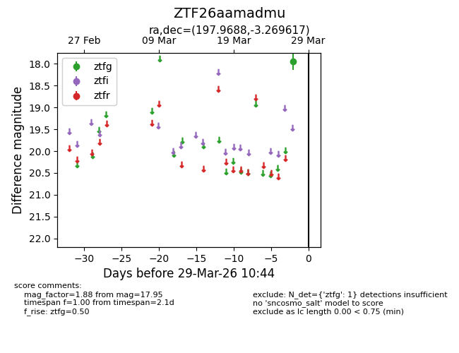
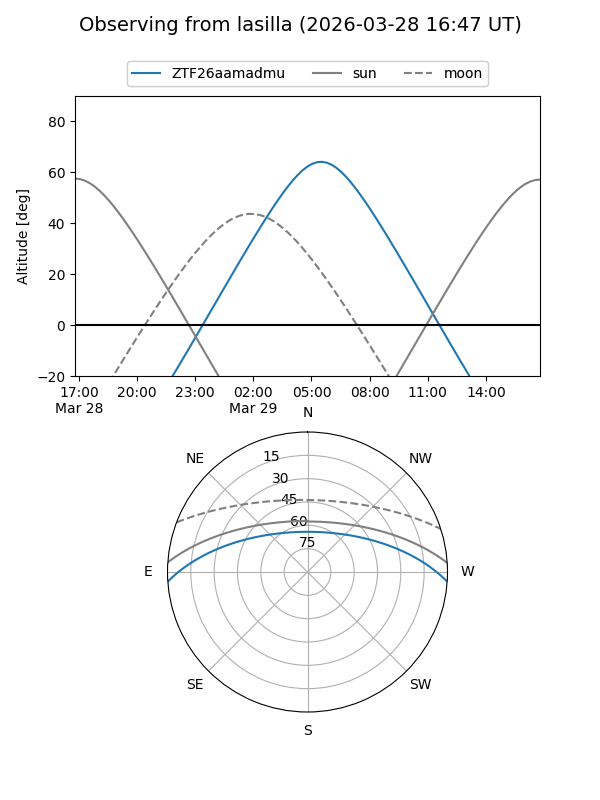
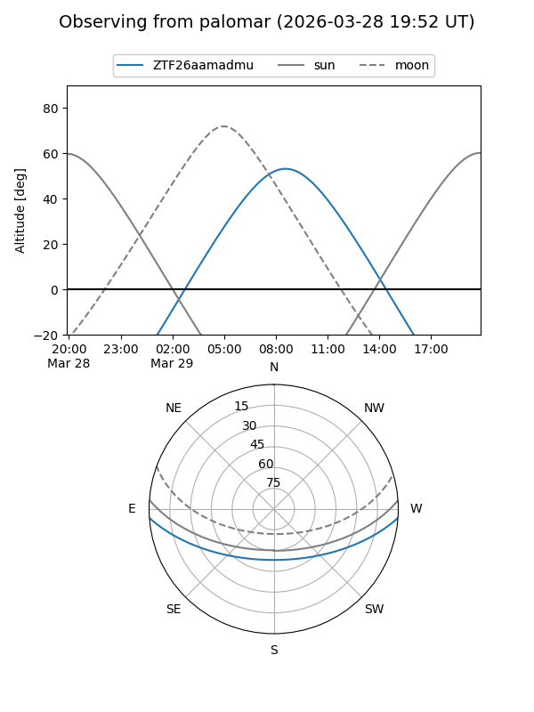

ZTF26aamadmu
Target ZTF26aamadmu at 2026-03-29 10:47
Aliases and brokers:
FINK: link
Lasair: link
ALeRCE: link
alt names
ZTF26aamadmu (ztf,fink_ztf)
Coordinates:
equatorial (ra, dec) = 197.9688,-3.26962
equatorial (HMS+DMS) = 13:11:52.51,-03:16:10.62
galactic (l, b) = (312.9329,+59.20470)
Flags:
Photometry:
last ztfg=17.95
1 ztfg detections
Lightcurve

Visibility


Additional plots